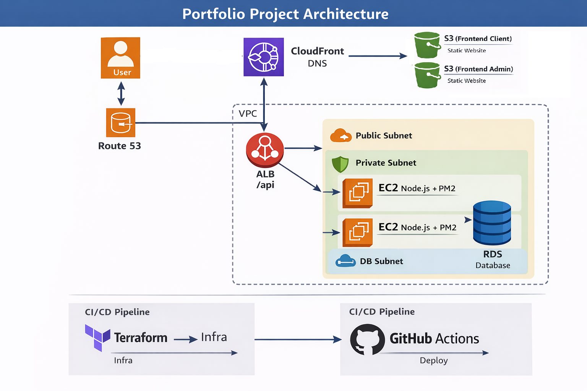
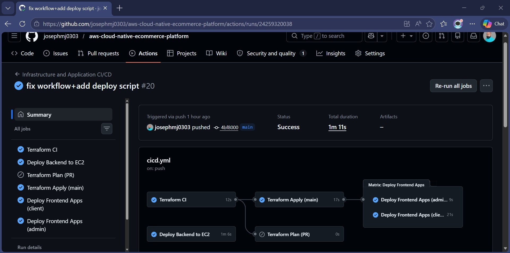
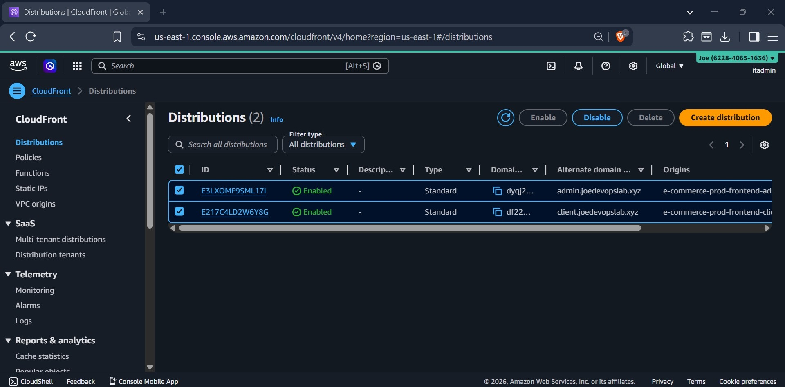
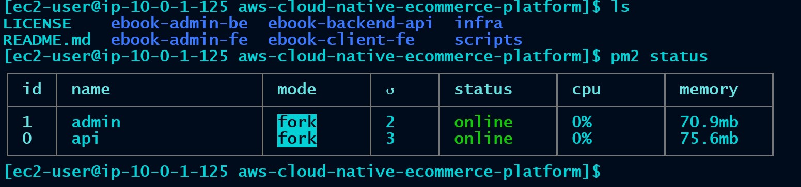
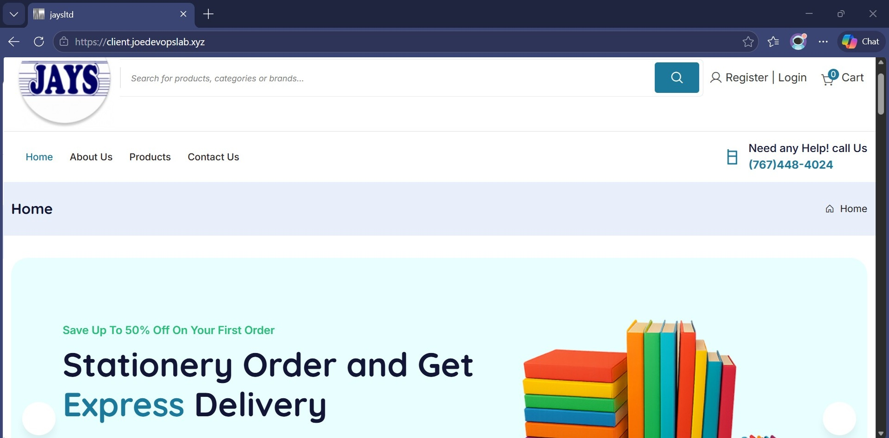
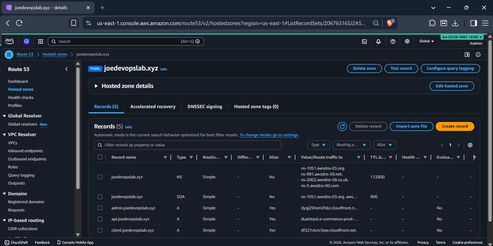
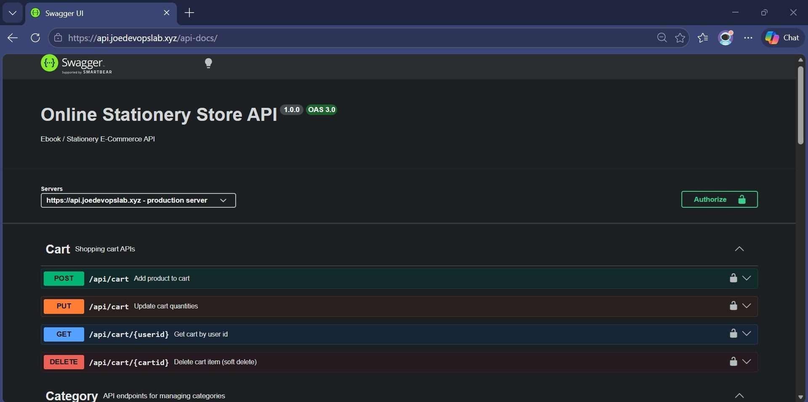

Production-style cloud-native eCommerce platform on AWS showcasing Infrastructure as Code, CI/CD automation, scalable application deployment, and real-world DevOps troubleshooting.

This project demonstrates the design and deployment of a cloud-native eCommerce platform on AWS using modern DevOps practices and automation. The solution hosts frontend applications using Amazon S3 and CloudFront, backend services on Amazon EC2 managed with PM2, and PostgreSQL on Amazon RDS. Infrastructure provisioning, deployment automation, and operational workflows are implemented to simulate production-style environments. The project highlights CI/CD automation with GitHub Actions, secure secrets management, domain-based routing, scalable cloud architecture, and real-world troubleshooting of infrastructure and deployment issues.

Automated CI/CD Pipeline

CloudFront Content Delivery

Backend Services Running on EC2

E-Commerce Frontend Application

Route 53 Domain Management

REST API Documentation
This project demonstrates end-to-end cloud deployment, CI/CD pipeline implementation, infrastructure automation, and production-style operational practices. It showcases practical experience with AWS services, deployment automation, troubleshooting, and cloud-native application delivery.